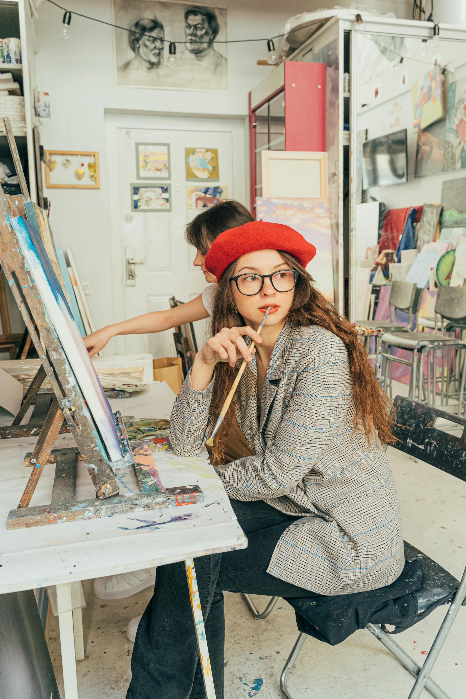

Algunas obras de Wassily Kandinski

Cartel de la Bauhaus de Weimar, 1923

Círculo azul, 1922

Pequeños mundos II, 1922
"El arte va más allá de su tiempo
y lleva parte del futuro".
Octubre 5-6 - 2024
En Línea - Presencial
"El arte va más allá de su tiempo
y lleva parte del futuro".

Aveces encuentro inspiración, con todas las referencias que me proponciona este sitio,para realizar mi trabajo.

Puedo elegir material de inspiración, buscando obras en todo el mundo, lo cual hace más enriquecedor mi trabajo .

Muchas veces busco obras de arte antiguas para tener puntos de vistas equidistantes en el tiempo,y asi abordar mi trabajo.

Me encanta poder observar pinturas de la vanguardia artistica, estos movimientos modernos que fueron un hito en la historia.